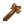
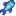
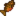

Pueblo Pelícano

Pueblo Pelícano es el lugar al que se muda el jugador al principio del juego, localizado en Stardew Valley. Aquí es donde vive, trabaja y socializa la mayoría de los aldeanos
Lewis es el alcalde de Pueblo Pelícano y lo ha sido durante más de 20 años; comenta que no ha tenido competencia para el cargo desde que se convirtió en alcalde.
La salida al noroeste del pueblo lleva a la Parada de autobús y La granja. La salida al suroeste lleva al Bosque Tizón, en el que se encuentran el Rancho de Marnie, la Cabaña de Leah y la Torre del Mago. Al sur del pueblo se encuentra La playa y saliendo por el norte se encuentra La montaña, con la Carpintería de Robin, Las minas, el Gremio de aventureros, el Ferrocarril y la Cantera.
Inicialmente, hay hierbajos ubicadas cerca del Camino del Sauce, 2, en el área detrás de Camino del Sauce, 1, detrás de MercaJoja, y al oeste del Centro Cívico, debajo del parque infantil. Estos hierbajos morirán durante el invierno, pero resurgirán al comienzo de cada año.
Lugares clave
| Imagen | Nombre | Residentes |
|---|---|---|
 |
Tienda local Pierre's | |
 |
Clínica de Harvey | |
| Centro Cívico | ||
 |
Museo | |

|
Herrería | |
| MercaJoja | ||
| Salón Fruta Estelar | ||
 |
Librería |
Otras residencias
| Imagen | Nombre | Residentes |
|---|---|---|
 |
Calle del Río, 1 | |
 |
Caravana | |
 |
Mansión del alcalde | |
 |
Camino del Sauce, 1 | |
 |
Camino del Sauce, 2 |
Oso de la Basura
El primer día no lluvioso del año 3, el Oso de la Basura aparecerá en la parte sur del Bosque Tizón. Al llevar 4 objetos solicitados al Oso de la Basura, se activará una escena en la que el Oso de la Basura limpia la basura del Bosque Tizón y la del patio delantero de la Caravana. La caseta de Dusty también recibe una mejora.
Recolección

Los objetos recolectables que se encuentra en el suelo de Pueblo Pelícano son:[1]
- En Primavera:
 Narciso (100%)
Narciso (100%) - En Verano:
 Guisante dulce (100%)
Guisante dulce (100%) - En Otoño:
 Mora (100%)
Mora (100%) - En Invierno:
 Azafrán (54%),
Azafrán (54%),  Acebo (38%), y
Acebo (38%), y  Fruta de cristal (8%)
Fruta de cristal (8%)
Los objetos recolectables aparecen a un ritmo medio de 1,2 por noche en primavera y verano; 0,9 por noche en otoño; y, 0,7 por noche en invierno.[2] El mapa muestra las posibles ubicaciones como casillas rojas.
Lugares de artefactos
Los Artefactos que pueden ser encontrados por desenterrar Lugar de artefacto en Pueblo Pelícano son:
 Cuchara oxidada (4% + 6-11%[3])
Cuchara oxidada (4% + 6-11%[3]) Costilla prehistórica (2.2-4%[3])
Costilla prehistórica (2.2-4%[3]) Ánfora quebrada (3%)
Ánfora quebrada (3%) Muñeco antiguo (0.8%)
Muñeco antiguo (0.8%)-  Palo de mascar (0.8%)
 Escápula prehistórica (0.7%)
Escápula prehistórica (0.7%) Abanico ornamental (0.6%)
Abanico ornamental (0.6%) Tambor antiguo (0.4%)
Tambor antiguo (0.4%) Flauta de hueso (0.4%)
Flauta de hueso (0.4%).png/24px-Strange_Doll_(green).png) Muñeco extraño (verde) (0.07%)
Muñeco extraño (verde) (0.07%).png/24px-Strange_Doll_(yellow).png) Muñeco extraño (amarillo) (0.07%)
Muñeco extraño (amarillo) (0.07%)
Otros artículos posibles son:
 Libro perdido (20% + 4-8%[3]); una vez que se han encontrado todos los Libros Perdidos, cualquier Libro Perdido ya encontrado se sustituye por
Libro perdido (20% + 4-8%[3]); una vez que se han encontrado todos los Libros Perdidos, cualquier Libro Perdido ya encontrado se sustituye por  Semillas variadas.
Semillas variadas.- 1-3
 Arcilla (12-24%[3])
Arcilla (12-24%[3]) - Solo en Invierno:
 Raíz invernal (21%)
Raíz invernal (21%) - Solo en Invierno:
 Ñame nival (14%)
Ñame nival (14%) - 1-3
 Mena de cobre (7-14%[3])
Mena de cobre (7-14%[3]) - 1-3
 Piedra (4-8%[3])
Piedra (4-8%[3]) - Solo en Primavera: 2-5
 Brote de arroz (4%)
Brote de arroz (4%) - Una
 Nota secreta no descubierta: hasta un 2,1% de posibilidad, solo si el jugador posee la Lupa.
Nota secreta no descubierta: hasta un 2,1% de posibilidad, solo si el jugador posee la Lupa.
Los lugares de artefactos aparecen a una tasa media de 0,2 por noche, excepto en invierno, cuando la tasa media aumenta a 0,8 por noche.[4]
Pesca

Los peces de río pueden ser pescados en el río que atraviesa Pueblo Pelícano. En Otoño, un Pez Legendario, el Rape, puede ser pescado en el extremo norte del río. La Sra. Angler, uno de los peces legendarios II, también se puede pescar allí.
Al pescar en la fuente a la izquierda del Centro Cívico, se puede encontrar una caja de regalo que contiene una Papelera decorativa (10% de probabilidad). De lo contrario, se pescará una sola pieza de madera o piedra, con igual probabilidad (45% de probabilidad cada una).[5]
| Hora | |||||||||||||||||||||
|---|---|---|---|---|---|---|---|---|---|---|---|---|---|---|---|---|---|---|---|---|---|
| 06 | 07 | 08 | 09 | 10 | 11 | 12 | 13 | 14 | 15 | 16 | 17 | 18 | 19 | 20 | 21 | 22 | 23 | 00 | 01 | ||
| Sólo días soleados | |||||||||||||||||||||
| Sólo días lluviosos | |||||||||||||||||||||
| Sólo días lluviosos | |||||||||||||||||||||
|  Besugo | |||||||||||||||||||||
| 06 | 07 | 08 | 09 | 10 | 11 | 12 | 13 | 14 | 15 | 16 | 17 | 18 | 19 | 20 | 21 | 22 | 23 | 00 | 01 | ||
| Sólo días soleados | |||||||||||||||||||||
| Sólo días soleados | |||||||||||||||||||||
| Sólo días lluviosos | |||||||||||||||||||||
| Besugo | |||||||||||||||||||||
| 06 | 07 | 08 | 09 | 10 | 11 | 12 | 13 | 14 | 15 | 16 | 17 | 18 | 19 | 20 | 21 | 22 | 23 | 00 | 01 | ||
|  Trucha tigre | |||||||||||||||||||||
| Sólo días lluviosos | |||||||||||||||||||||
| Sólo días lluviosos | |||||||||||||||||||||
| Sólo días lluviosos | |||||||||||||||||||||
| Besugo | |||||||||||||||||||||
| 06 | 07 | 08 | 09 | 10 | 11 | 12 | 13 | 14 | 15 | 16 | 17 | 18 | 19 | 20 | 21 | 22 | 23 | 00 | 01 | ||
| Trucha tigre | |||||||||||||||||||||
| Besugo | |||||||||||||||||||||
Curiosidades
- Pueblo Pelícano está situado dentro de la República Ferngill, en guerra con el Imperio Gotoro que está al otro lado del Mar Gema[6].
- El Dr. Harvey, al llamar por su radio de onda corta, identifica su ubicación (en Pueblo Pelícano) como 52 norte 43.5 este. Por lo tanto, si Stardew Valley está en la Tierra, puede encontrarse cerca de un pueblo llamado Krasnoye (uno de los muchos que hay) en Rusia, a unos 160 km (100 mi) al NO de Saratov, y a unos 600 km (375 mi) al SE de Moscú. "Krasnoye" significa "hermoso" o "rojo". Sin embargo, no está a orillas del mar.
- El jugador no puede llenar su regadera desde la fuente.
Referencias
- ↑ Para cada artículo de recolección, el porcentaje proporcionado es el porcentaje medio de todos los artículos de recolección que serán el artículo especificado para esa temporada. Los datos de entrada son Locations.xnb, que se procesa mediante código en GameLocation::spawnObjects.
- ↑ De las 13200 casillas totales de Ciudad Pelícano, 870 (7%) son lugares válidos para la aparición de objetos de recolección estándar. Para más información sobre la aparición de objetos de recolección, ver Recolección.
- ↑ 3,0 3,1 3,2 3,3 3,4 3,5 La probabilidad de encontrar objetos adicionales en los Lugares con artefactos depende de la estación. La probabilidad máxima es en verano y otoño. En invierno, la probabilidad es un 50% menor; en primavera es un 6% menor. Véase Lugar de artefacto para más información.
- ↑ De las 13200 casillas totales de Ciudad Pelícano, 891 (7%) son lugares válidos para la aparición de lugares de artefactos en primavera, verano y otoño. 3036 (23%) son lugares de aparición válidos en invierno. Véase Lugar de artefacto para más información.
- ↑ Consulte StardewValley.Locations.Town::getFish en el código del juego.
- ↑ https://twitter.com/ConcernedApe/status/697468899881652224
Historial
- 1.4: Oso de la Basura introducido. Los hierbajos reaparecen cada 1 de Primavera.
| Lugares | |
|---|---|
| Lugares | Bosque secreto • Bosque Tizón • Bosque trasero • Cantera • Caverna Calavera • Cementerio • Cloacas • Desierto de Calico • Estanque de la granja • Ferrocarril • Isla Jengibre • Granja • Mina de cantera • Minas • Montaña • Playa • Madriguera de bichos mutantes • Pantano de la Bruja • Parada de autobús • Pueblo Pelícano • Túnel • Vagoneta |